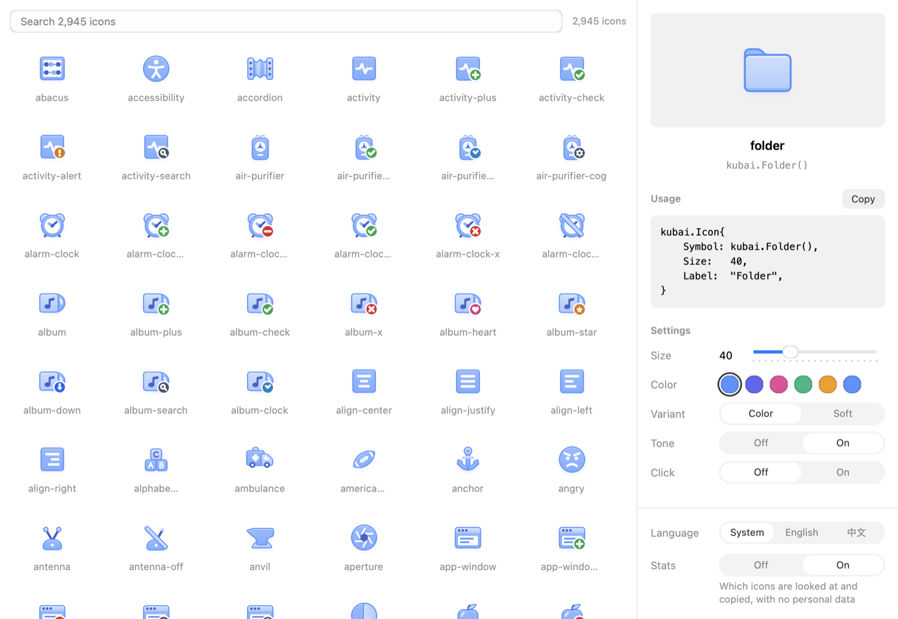

Kubai Icons for NSGo
2,871 layered icons in your accent's tints, with gradients, a shadow and badges, that move on hover. Compiled ahead of time for NSGo's native apps: no JavaScript, and the platform plays the motion on its frame clock.

Native, and alive
Upstream draws each icon with JavaScript. This library runs that code once, at build time, and keeps what it drew.
Layered and tinted
Every icon takes an accent and a variant; badges take their own tone.
Moves on hover
One animated value drives each icon, so the motion runs on the platform's frame clock.
No JavaScript
Icons are canvas operations and animated tracks, drawn by every NSGo backend.
Only what you use
An accessor per icon and no registry: an app links only the icons it calls.
Get started
Add the library to an NSGo app with Go 1.26 or later.
go get github.com/oneo-me/nsgo-icons-kubai
import kubai "github.com/oneo-me/nsgo-icons-kubai"
kubai.Icon{
Symbol: kubai.FolderPlus(),
Size: 32,
Label: "Folder plus",
}
Find an icon
The gallery searches every icon by name and shows the code that draws the one you choose, in the size, accent and variant you set, ready to copy. Run it from a checkout:
git clone https://github.com/oneo-me/nsgo-icons-kubai cd nsgo-icons-kubai go tool nsgo dev examples/gallery